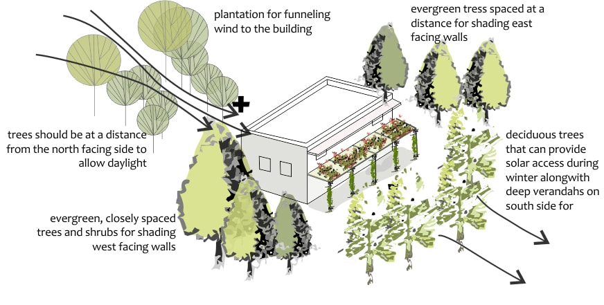
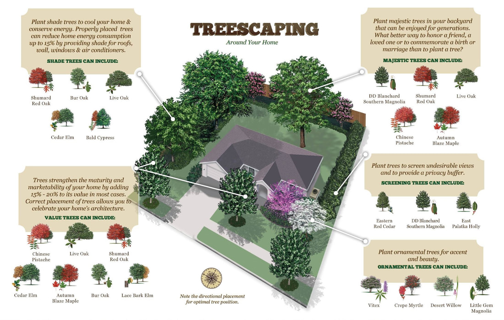
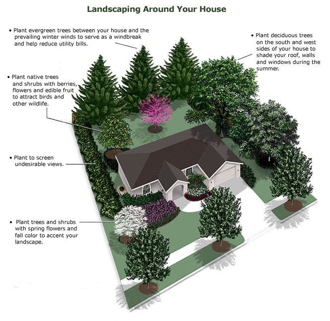

Guidance
Choosing the perfect tree for your garden is one of the most important decisions you'll make. Consider the location, the mature size, the shape and its growth, and we'll help you every step of the way.
Location & Aspect
Selecting the perfect tree starts with understanding your site. The right tree in the wrong place will never fulfil its potential.
Consider how your garden or project site is oriented: which way it faces, where the prevailing wind comes from, and how nearby buildings or other trees affect the microclimate.
North-facing side: trees should be at a distance from the north-facing side to allow daylight into the building.
East-facing walls: evergreen trees spaced at a distance provide shading for east-facing walls.
West-facing walls: evergreen, closely spaced trees and shrubs shade west-facing walls and reduce solar gain.
Wind management: use a plantation for funneling wind to or away from the building as required.
South side: deciduous trees provide solar access during winter along with deep verandahs, while giving summer shade.

Treescaping Around Your Home
Correctly placed trees can reduce home energy consumption up to 15% and add 15–20% to your property value in most cases.
Correct placement of trees allows you to celebrate your home's architecture. Think carefully about what role each tree plays: shade, screening, structure or seasonal beauty.
Shade trees: plant to cool your home and conserve energy. Properly placed shade trees provide shade for roofs, walls, windows and air conditioners. Species to consider: Shumard Red Oak, Bur Oak, Live Oak, Cedar Elm, Bald Cypress.
Majestic trees: plant in your backyard to be enjoyed for generations. Species to consider: DD Blanchard Southern Magnolia, Shumard Red Oak, Live Oak, Chinese Pistache, Autumn Blaze Maple.
Value trees: trees strengthen the maturity and marketability of your home. Species to consider: Chinese Pistache, Live Oak, Shumard Red Oak, Cedar Elm, Autumn Blaze Maple, Bur Oak, Lace Bark Elm.
Screening trees: plant to screen undesirable views and provide a privacy buffer. Species to consider: Eastern Red Cedar, DD Blanchard Southern Magnolia, East Palatka Holly.
Ornamental trees: plant for accent and beauty. Species to consider: Vitex, Crepe Myrtle, Desert Willow, Little Gem Magnolia.
Note the directional placement: always consider the compass orientation of your site before selecting and positioning trees for maximum effect.

Landscaping with Trees
A well-planned landscape uses trees purposefully; every species earns its place.
Whether you're designing a residential garden, a commercial project or a public planting scheme, the placement of each tree should be considered carefully against your site's conditions and the year-round effect you want to achieve.
Windbreaks: plant evergreen trees between your house and the prevailing winter winds to serve as a windbreak and help reduce utility bills.
Summer shade: plant deciduous trees on the south and west sides of your house to shade your roof, walls and windows during the summer.
Wildlife value: plant native trees and shrubs with berries, flowers and edible fruit to attract birds and other wildlife.
Screening: plant to screen undesirable views while enhancing the character of your outdoor space.
Seasonal colour: plant trees and shrubs with spring flowers and autumn colour to accent your landscape.

Next Steps
Once you've found your perfect tree, our comprehensive planting guide walks you through everything from preparation to aftercare. Or browse our full selection and get started today.